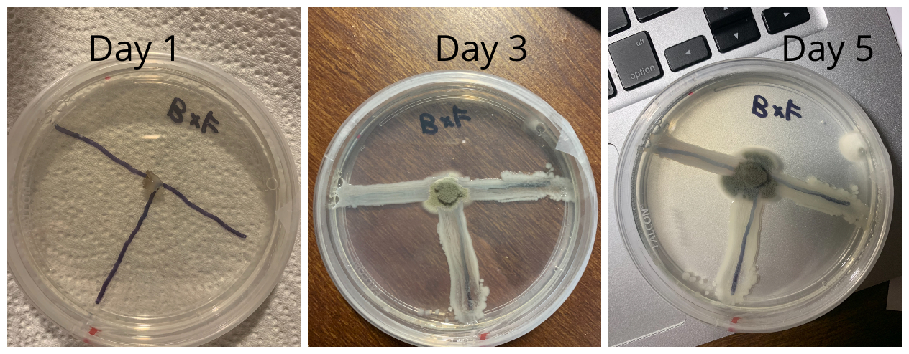
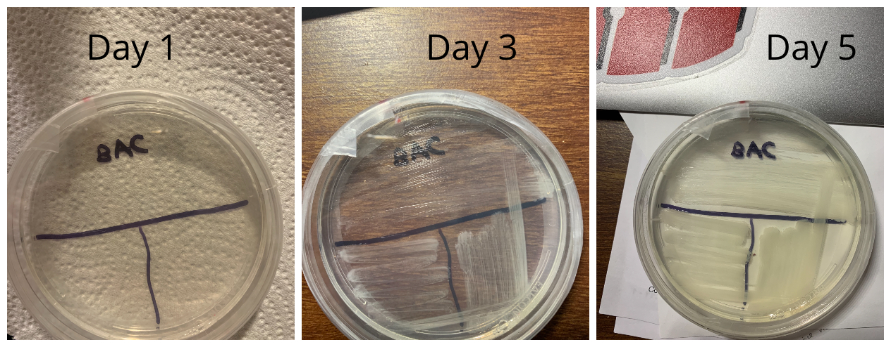

Hypothesis
The fungi will stop bacteria from growing.
Description of experiment
For this experiment, I placed a plug of my bacteria in the middle of a petri dish and took a sample of bacteria to swab in a "T zone" (Refer to Day 1 of BxF pictures below). In another dish, I streaked the sample of bacteria to act as my control group. I then observed the growth of my microbe for 5 days and recorded the results.
Results
Treatment Group 1(My microbe placed with bacteria)
My microbe did not seem to stop bacteria from growing.
Control Group (Bacteria only)
Bacteria growed on the petri dish.
Conclusion
- My hypothesis was false, my microbe did not stop bacteria from growing.
- In the control dish, bacteria growed as expected.
- I can safly come to the conclusion that my fungi does not prevent this strain of bacteria from growing, so it does not have antibacterial properties against this particular type of bacteria. To identify its true characteristics, I would have to carry out additional experiments with different types of bacteria.
- Through this experiment, I have learned that my microbe, Mike Robe, cannot prevent this strain of bacteria from growing.